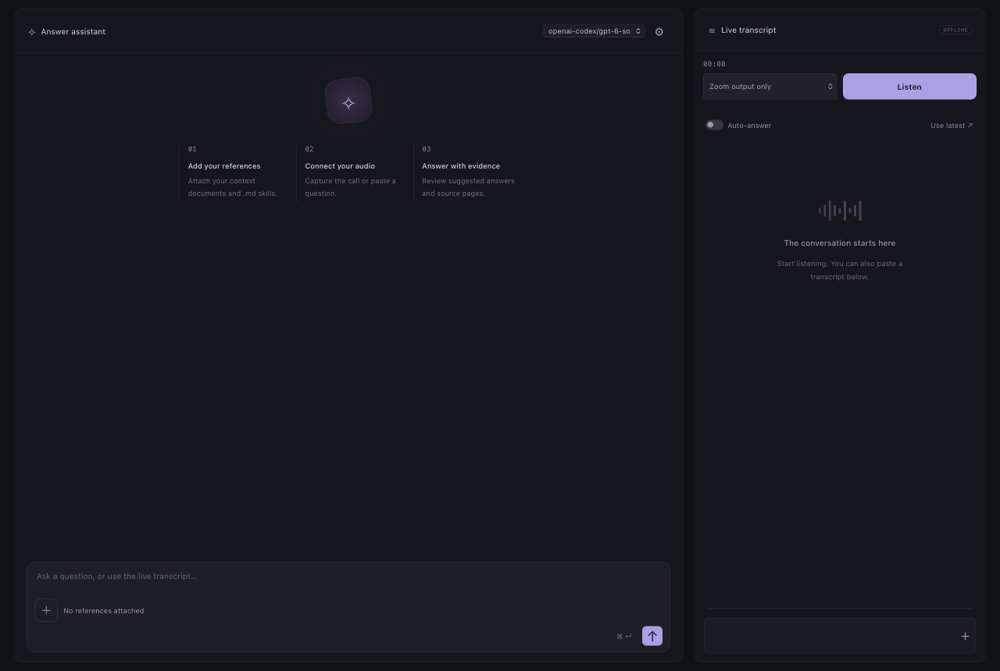

Keep the thread.
Capture meeting audio and follow the transcript as the conversation unfolds.
A desktop meeting assistant
Live transcripts, your references, and answers when you need them. Ghst keeps the context close so you can focus on the people in the room.
Get Ghst on GitHubA desktop meeting assistant. Bring your own AI connection.

Capture meeting audio and follow the transcript as the conversation unfolds.
Add PDF and Markdown references. Ask questions and review answers with source passages.
Come back to saved transcripts, questions, and answers when you need another look.
Ghst stores references and conversation history locally. It sends audio to your transcription provider and questions, selected passages, and instructions to your answer provider.